Game Report
Oliver vs. Van
(Yeah yeah, I was lazy and
used FrontPage Express... =)
| We played on a random generated map. Van (blue and GDI) started bottom left. Van insisted that I play as another color besides green (which I like because it shows up as the same color as the tiberium on radar =)... so I chose pink as a joke. =) I started out top right as GDI. The map we played on had a lot of tiberium so I was almost never really low on cash. |
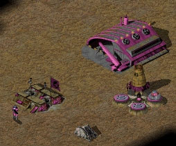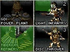I started by building a barracks then a refinery. While building the refinery, I pumped out ten infantry units. Five light infantry and five disk throwers. After I was finished, I sent all ten of them to the bottom left area to try to find Van's base. 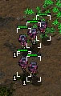 |
| 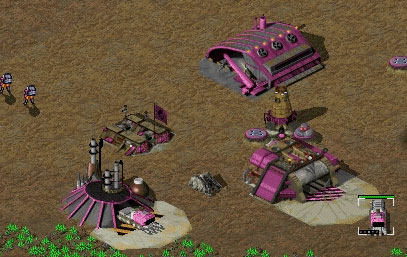After my refinery was done, I build a second power plant and started building a war factory while training a few more infantry units for defense. After the war factory was done, I built a second refinery and another harvestor (gotta have that cash flow =). After I was done with that, I build a few titans, wolverines, etc. and started creating a small army. I still had not found Van's base due to the very weird terrain features of the map (only one way to Van's base and lots of hills, ditches, etc.). |
| Finally, after much searching, I
found Van's base (see radar) and prepared a small assault
with an APC with two engineers. 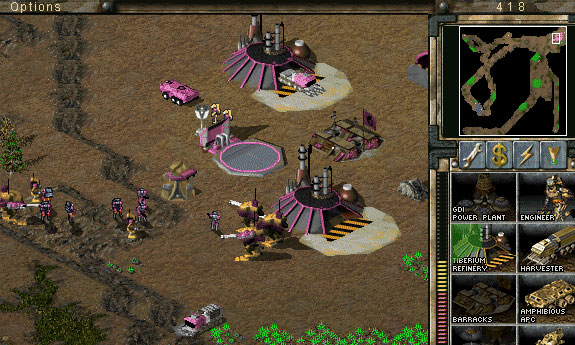 |
| Here is Van's base at around the
same time as the screenshot above: 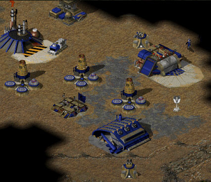 |
| After seeing Van's base, and
thinking he had virtually no offensive/defensive units, I
decided to attack him (notice the line of pink units
moving south =). 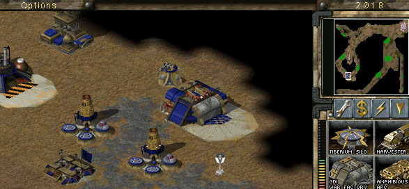 This time, when I looked at his base, I noticed that he moved his construction yard (we had the "un-deployable" feature enabled). I guess he noticed me putting my engineers into my APC =) After going a little farther south, Van counter-attacked my army with a larger one. He destroyed my army with a few casualties on his side =( I must admit, I under-estimated Van =) 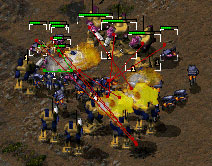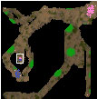 After destroying my army, I still had my APC left (it was trailing behind my army. I tried to rush it south to capture a two structures with the engineers (a radar and a refinery were my targets), but Van destroyed the APC. Luckily, the engineers popped out safely and I rushed them south towards the two targeted structures. Van, knowing that he couldn't stop the engineers (they were out of his units' range) sold the radar and refinery and killed my engineers with the infantry that popped out of those two buildings. Well, I guess that's better than just nothing =). 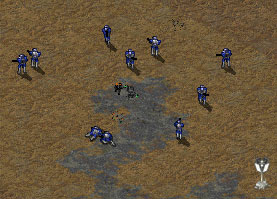 |
| After a lot more time, I built
another large army (including a Mammoth Mark II ;), an
MCV, and a Orca Carry-All. I moved the army to the top
left section of the map and carry-alled my MCV to the
area. Van responded by sending his army to attack my army
(and try to stop me from building a second base in the
area I guess =). I quickly deployed my MCV and started
constructing a second EMP cannon (the EMP was already
fully charged from the first EMP cannon in my orginal
base). I got it up just in time and EMPed Van's army!
YES!!! =) Over 75% of his Titans were EMPed, leaving
Van's army in a very bad shape (only 20+ infantry units,
a few wolverines and three to five titans). I quickly
rushed past his units and took out the Titans that were
useless (before they went back online). After they were
gone, I took out the rest of his army. During this time,
I was so caught up in the action that I forgot to take
screenshots =(. Sorry. =( During the battle, I built a barracks at my second base location and started pumping out disc throwers (I love those guys =) as reinforcement. Unfortunately, by the time the MM2 reached my army, the battle had already ended with my forces victorious. Ah well, he'll come in handy when I attack Van's main base =). A few seconds later, two Orca bombers reached Van's base and bombed his EMP cannon so that my attack force would be safe when they went total offensive. I also remembered about my group of six jump-jet infantry who were annoying Van's harvestor. By this time, only one was left and I just sent it off to join my main attack force. After moving south, I destroyed the buildings that were left in Van's original location. He also sold many of them and I had to crush the infantry created from that action (annoying little pests =). Van had moved his MCV to the right about 20 squares so I sent my army in that direction. I also undeployed my construction yard which was located at my second base and carry-all'ed it south right above Van's second base. Along the way, I had to take out 3 (or 4?) distruptor tanks which were very annoying. Van also made a second ghostalker (his first one I destroyed when he tried attacking my base with it) which destroyed one or two titans I believe. 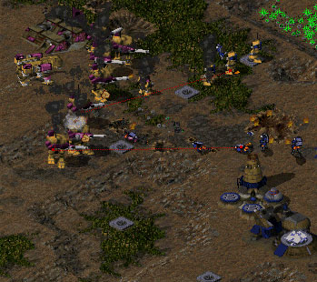 After putting up a very good fight. I was left with my MM2 and three Titans (yikes!). 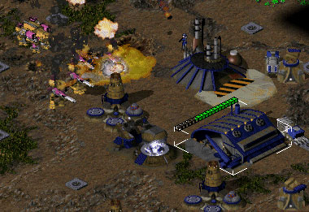 I headed for his construction yard, which my MM2 took out with ease =). After taking out most of his base, I finished building a war factory above Van's base (with the MCV that I carry-all'ed over there) and a ghostalker. This is when Van gave up with the following message: 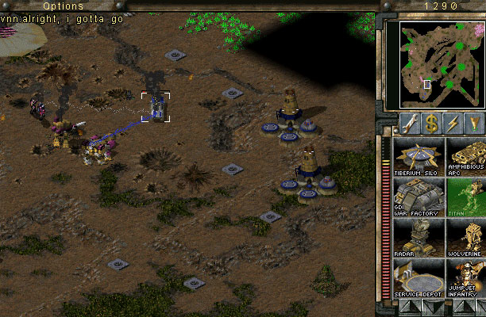 "Sure" Van, that's what they all say ;) Ack! And I only have one Titan left! |
Copyright 1999 Oliver Wong
All rights Reserved